NP-Vollständigkeit
Das Problem des Handlungsreisenden
(engl.: Traveling Salesman Problem; abgekürzt: TSP)<br\> Wikipedia (de) (en)

{kind=link}
- Eine der wohl bekanntesten Aufgabenstellungen im Bereich der Graphentheorie ist das Problem des Handlungsreisenden.
- Hierbei soll ein Handlungsreisender nacheinander n Städte besuchen und am Ende wieder an seinem Ausgangspunkt ankommen. Dabei soll jede Stadt nur einmal besucht werden und der Weg mit den minimalen Kosten gewählt werden.
- Alternativ kann auch ein Weg ermittelt werden, dessen Kosten unter einer vorgegebenen Schranke liegen.
- gegeben: zusammenhängender, gewichteter Graph (oft vollständiger Graph)
- gesucht: kürzester Weg, der alle Knoten genau einmal (falls ein solcher Pfad vorhanden) besucht (und zum Ausgangsknoten zurückkehrt)<br\>
- auch genannt: kürzester Hamiltonkreis
- - durch psychologische Experimente wurde herausgefunden, dass Menschen (in 2D) ungefähr proportionale Zeit zur Anzahl der Knoten brauchen, um einen guten Pfad zu finden, der typischerweise nur
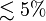
länger als der optimale Pfad ist<br\>
- - durch psychologische Experimente wurde herausgefunden, dass Menschen (in 2D) ungefähr proportionale Zeit zur Anzahl der Knoten brauchen, um einen guten Pfad zu finden, der typischerweise nur
- vorgegeben: Startknoten (kann willkürlich gewählt werden), vollständiger Graph
- => v-1 Möglichkeiten für den ersten Nachfolgerknoten => je v-2 Möglichkeiten für dessen Nachfolger...
- also
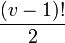
mögliche Wege in einem vollständigen Graphen
- Ein naiver Ansatz zur Lösung des TSP Problems ist das erschöpfende Durchsuchen des Graphen, auch "brute force" Algorithmus ("mit roher Gewalt"), indem alle möglichen Rundreisen betrachtet werden und schließlich die mit den geringsten Kosten ausgewählt wird.
- Dieses Verfahren versagt allerdings bei größeren Graphen, aufgrund der hohen Komplexität.
Approximationsalgorithmus
Für viele Probleme in der Praxis sind keine effizienten Algorithmen bekannt (NP-schwer). Diese (z.B. TSP) werden mit Approximationsalgorithmen berechnet, die effizient berechenbar sind, aber nicht unbedingt die optimale Lösung liefern. Beispielsweise ist es relativ einfach, eine Tour zu finden, die höchstens um den Faktor zwei länger ist als die optimale Tour. Die Methode beruht darauf, dass einfach der minimale Spannbaum ermittelt wird.
Approximationsalgorithmus für TSP<br\>
- TSP für n Knoten sei durch Abstandsmatrix D =
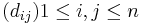
- gegeben (vollständiger Graph mit n Knoten,
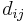
= Kosten der Kante (i,j)) <br\> - gesucht: Rundreise mit minimalen Kosten. Dies ist NP-schwer!<br\>
- D erfüllt die Dreiecksungleichung
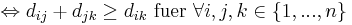
<br\> - Dies ist insbesondere dann erfüllt, wenn D die Abstände bezüglich einer Metrik darstellt oder D Abschluss einer beliebigen Abstandsmatrix C ist, d.h. : = Länge des kürzesten Weges (bzgl. C) von i nach j.
- Die ”Qualität”der Lösung mit einem Approximationsalgorithmus ist höchstens um einen konstanten Faktor schlechter ist als die des Optimums.
Systematisches Erzeugen aller Permutationen
- Allgemeines Verfahren, wie man von einer gegebenen Menge verschiedene Schlüssel - in diesem Fall: Knotennummern - sämtliche Permutationen systematisch erzeugen kann. <br\>
- Trick: interpretiere jede Permutation als Wort und betrachte dann deren lexikographische ("wie im Lexikon") Ordnung.<br\>
- Der erste unterschiedliche Buchstabe unterscheidet. Wenn die Buchstaben gleich sind, dann kommt das kürzere Wort zuerst.
gegeben: zwei Wörter a, b der Länge n=len(a) bzw. m=len(b). Sei k = min(n,m) (im Spezialfall des Vergleichs von Permutationen gilt k = n = m)<br\> Mathematische Definition, wie die Wörter im Wörterbuch sortiert sind: <br\>
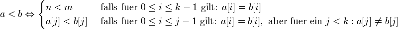
<br\>
Algorithmus zur Erzeuguung aller Permutationen:
- beginne mit dem kleinsten Wort bezüglich der lexikographischen Ordnung => das ist das Wort, wo a aufsteigend sortiert ist
- definiere Funktion "next_permutation", die den Nachfolger in lexikographischer Ordnung erzeugt
Beispiel: Die folgenden Permutationen der Zahlen 1,2,3 sind lexikographisch geordnet
1 2 3 6 Permutationen, da 3! = 6 1 3 2 2 1 3 2 3 1 3 1 2 3 2 1 ----- 0 1 2 Position
Die lexikographische Ordnung wird deutlicher, wenn wir statt dessen die Buchstaben a,b,c verwenden:
abc acb bac bca cab cba
Eine Funktion, die aus einer gegebenen Permutation die in lexikographischer Ordnung nächst folgende erzeugt, kann mit dem Algorithmus von Pandita (Indien, 1325-1400) -- dem (mehrmals wiederentdeckten) Standardalgorithmus für diese Aufgabe -- implementiert werden:
def next_permutation(a): i = len(a) -1 #letztes Element; man arbeitet sich von hinten nach vorne durch while True: # keine Endlosschleife, da i dekrementiert wird und damit irgendwann 0 wird if i <= 0: return False # a ist letzte Permutation i -= 1 if a[i]<a[i+1]: break #lexikogr. Nachfolger hat größeres a[i] j = len(a) while True: j -= 1 if a[i] < a[j]: break a[i], a[j] = a[j], a[i] #swap a[i], a[j] #sortiere aufsteigend zwischen a[i+1] und Ende #zur Zeit absteigend sortiert => invertieren i += 1 j = len(a) -1 while i < j: a[i], a[j] = a[j], a[i] i += 1 j-= 1 return True # eine weitere Permutation gefunden def naiveTSP(graph): start = 0 result = range(len(graph))+[start] rest = range(1,len(graph)) c = pathCost(result, graph) while next_permutation(rest): r = [start]+rest+[start] cc = pathCost(r, graph) if cc < c: c = cc result = r return c, result
Komplexität:
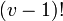
Schleifendurchläufe (=Anzahl der Permutationen, da die Schleife abgebrochen wird, sobald es keine weiteren Permutationen mehr gibt), also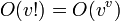
- Beispiel
| i = 0 | j = 3 | |||
| ↓ | ↓ | |||
| 1 | 4 | 3 | 2 | #input für next_permutation |
| i = 2 | j = 3 | |||
| ↓ | ↓ | |||
| 2 | 4 | 3 | 1 | # vertauschen der beiden Elemente |
| i = 2 | ||||
| j = 2 | ||||
| ↓ |
| |||
| 1 | 2 | 3 | 4 | #absteigend sortiert |
Stirling'sche Formel
Die Stirling-Formel ist eine mathematische Formel, mit der man für große Fakultäten Näherungswerte berechnen kann. Die Stirling-Formel findet überall dort Verwendung, wo die exakten Werte einer Fakultät nicht von Bedeutung sind. Damit lassen sich durch die Stirling'sche Formel z.T. starke Vereinfachungen erzielen.
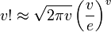
-
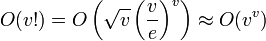
Anwendung: Das Erfüllbarkeitsproblem in Implikationengraphen
Das Erfüllbarkeitsproblem hat auf den ersten Blick nichts mit Graphen zu tun, denn es geht um Wahrheitswerte logischer Ausdrücke. Man kann logische Ausdrücke jedoch unter bestimmten Bedingungen in eine Graphendarstellung überführen und somit das ursprüngliche Problem auf ein Problem der Graphentheorie reduzieren, für das bereits ein Lösungsverfahren bekannt ist. In diesem Abschnitt wollen wir dies für die sogenannten Implikationengraphen zeigen, ein weiteres Beispiel findet sich im Kapitel NP-Vollständigkeit.
Das Erfüllbarkeitsproblem
(vgl. WikiPedia (de))
Das Erfüllbarkeitsproblem (SAT-Problem, von satisfiability) befasst sich mit logischen (oder Booleschen) Funktionen: Gegeben sei eine Menge
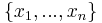
Boolscher Variablen (d.h., die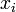
können nur die Werte True oder False annehmen), sowie eine logische Formel, in der die Variablen mit den üblichen logischen Operatoren: Negation ("nicht", in Python: not)
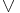
: Disjunktion ("oder", in Python: or)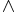
: Konjuktion ("und", in Python: and): Implikation ("wenn, dann", in Python nicht als Operator definiert)
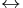
: Äquivalenz ("genau dann, wenn", in Python: ==): exklusive Disjunktion ("entweder oder", in Python: !=)
verknüpft sind. Klammern definieren die Reihenfolge der Auswertung der Operationen. Für jede Belegung der Variablen mit True oder False liefert die Formel den Wert der Funktion, der natürlich auch nur True oder False sein kann. Wenn Formel und Belegung gegeben sind, ist die Auswertung der Funktion ein sehr einfaches Problem: Man transformiert die Formel in einen Parse-Baum (siehe Übungsaufgabe "Taschenrechner) und wertet jeden Knoten mit Hilfe der üblichen Wertetabellen für logische Operatoren aus, die wir hier zur Erinnerung noch einmal angeben:

|
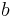 |
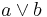 |
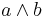 |
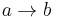 |
|
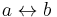 |
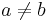 |
| 0 | 0 | 0 | 0 | 1 | 1 | 1 | 0 |
| 0 | 1 | 1 | 0 | 1 | 0 | 0 | 1 |
| 1 | 0 | 1 | 0 | 0 | 1 | 0 | 1 |
| 1 | 1 | 1 | 1 | 1 | 1 | 1 | 0 |
Beim Erfüllbarkeitsproblem wird die Frage umgekehrt gestellt:
- Gegeben sei eine logische Funktion. Ist es möglich, dass die Funktion jemals den Wert True annimmt?
Das heisst, kann man die Variablen so mit True oder False belegen, dass die Formel am Ende wahr ist? Im Prinzip kann man diese Frage durch erschöpfende Suche leicht beantworten, indem man die Funktion für alle
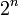
möglichen Belegungen einfach ausrechnet, aber das dauert für große n (ab ca.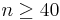
) viel zu lange. Erstaunlicherweise ist es aber noch niemanden gelungen, einen Algorithmus zu finden, der für beliebige logische Funktionen schneller funktioniert. Im Gegenteil wurde gezeigt, dass das Erfüllbarkeitsproblem NP-vollständig ist, so dass wahrscheinlich kein solcher Algorithmus existiert. Trotz (oder gerade wegen) seiner Schwierigkeit hat das Erfüllbarkeitsproblem viele Anwendungen gefunden, vor allem beim Testen logischer Schaltkreise ("Gibt es eine Belegung der Eingänge, so dass am Ausgang der verbotene Wert X entsteht?") und bei der Planerstellung in der künstlichen Intelligenz ("Kann man ausschließen, dass der generierte Plan Konflikte enthält?"). Es ist außerdem ein beliebtes Modellproblem für die Erforschung neuer Ideen und Algorithmen für schwierige Probleme.Normalformen für logische Ausdrücke
Um die Beschreibung von Erfüllbarkeitsproblemen zu vereinfachen und zu vereinheitlichen, hat man verschiedene Normalformen für logische Ausdrücke eingeführt. Die wichtigste ist die Konjuktionen-Normalform (CNF - conjunctive normal form). Ein Ausdruck in Konjuktionen-Normalform ist eine UND-Verknüpfung von M Klauseln:
(CLAUSE1)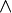
(CLAUSE2) ... (CLAUSEM)
Jede Klausel ist wiederum ein logischer Ausdruck, der aber sehr einfach sein muss: Er darf nur noch k Variablen enthalten, die nur mit den Operatoren NICHT und ODER verknüpft werden dürfen, z.B.
CLAUSE1 :=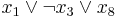
Je nachdem, wie viele Variablen pro Klausel erlaubt sind, spricht man von k-CNF und entsprechend von einem k-SAT Problem. Es ist außerdem üblich, die Menge der Variablen und die Menge der negierten Variablen zusammen als Menge der Literale zu bezeichnen:
LITERALS :=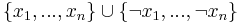
Formal definiert man die k-Konjunktionen-Normalform (k-CNF) am besten durch eine Grammatik in Backus-Naur-Form:
k_CNF ::= CLAUSE | k_CNF CLAUSE CLAUSE ::= (LITERAL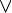
... LITERAL) # genau k Literale pro Klausel LITERAL ::= VARIABLE | VARIABLE VARIABLE ::=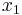
| ... |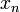
Beispiele:
- 3-CNF:
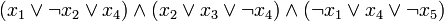
- 2-CNF:
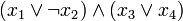
...
Gesucht ist eine Belegung der Variablen mit True und False, so dass der Ausdruck den Wert True hat. Aus den Eigenschaften der UND- und ODER-Verknüpfungen folgt, dass ein Ausdruck in k-CNF genau dann True ist, wenn jede einzelne Klausel True ist. In jeder Klausel wiederum hat man k Chancen, die Klausel True zu machen, indem man eins der Literale zu True macht. Eventuell werden dadurch aber andere Klauseln wieder zu False, was die Aufgabe so schwierig macht. Die Bedeutung der k-CNF ergibt sich aus folgendem
- Satz
- Jeder logische Ausdruck kann effizient nach 3-CNF transformiert werden, jedoch im allgemeinen nicht nach 2-CNF.
Man kann sich also auf Algorithmen für 3-SAT-Probleme konzentrieren, ohne dabei an Ausdrucksmächtigkeit zu verlieren.
Leider gilt der entsprechende Satz nicht für k=2: Ausdrücke in 2-CNF sind weit weniger mächtig, weil man in jeder Klausel nur noch zwei Wahlmöglichkeiten hat. Bestimmte logische Ausdrücke sind aber auch nach 2-CNF transformierbar, beispielsweise die Bedingung, dass zwei Literale u und v immer den entgegegesetzten Wert haben müssen. Dies ergibt ein Paar von ODER-Verknüpfungen:
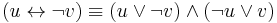
Die 2-CNF hat den Vorteil, dass es effiziente Algorithmen für das 2-SAT-Problem gibt, die wir jetzt kennenlernen wollen. Es zeigt sich, dass man Ausdrücke in 2-CNF als Graphen repräsentieren kann, indem man sie zunächst in die Implikationen-Normalform (INF für implicative normal form) überführt. Die Implikationen-Normalform besteht ebenfalls aus einer Menge von Klauseln, die durch UND-Operationen verknüpft sind, aber jede Klausel ist jetzt eine Implikation. Die Grammatik der Implikationen-Normalform (INF) lautet:
INF ::= CLAUSE | INF CLAUSE CLAUSE ::= (LITERALLITERAL) # genau 2 Literale pro Implikation LITERAL ::= VARIABLE | VARIABLE VARIABLE ::= | ... |
und ein gültiger Ausdruck wäre z.B.
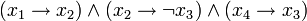
Die Umwandlung von 2-CNF nach INF beruht auf folgender Äquivalenz, die man sich aus der obigen Wahrheitstabelle leicht herleitet:
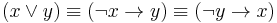
Aus dieser Äquivalenz folgt der
- Satz
- Ein Ausdruck in 2-CNF kann nach INF transformiert werden, indem man jede Klausel
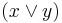
durch das Klauselpaar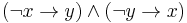
ersetzt.
Man beachte, dass man für jede ODER-Klausel des ursprünglichen Ausdrucks zwei Implikationen (eine für jede Richtung des "wenn, dann") einfügen muss, um die Symmetrie des Problems zu erhalten.
Lösung des 2-SAT-Problems mit Implikationgraphen
Jeder Ausdruck in INF kann als gerichteter Graph dargestellt werden:
- Für jedes Literal wird ein Knoten in den Graphen eingefügt. Es gibt also für jede Variable und für ihre Negation jeweils einen Knoten, d.h. 2n Knoten insgesamt.
- Jede Implikation ist eine gerichtete Kante.
Implikationengraphen eignen sich, um Ursache-Folge-Beziehungen oder Konflikte zwischen Aktionen auszudrücken. Beispielsweise kann man die Klausel
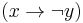
als "wenn man x tut, darf man y nicht tun" interpretieren. Ein anderes schönes Beispiel findet sich in Übung 12.Für die Implementation eines Implikationengraphen in Python empfiehlt es sich, die Knoten geschickt zu numerieren: Ist die Variable dem Knoten i zugeordnet, so sollte die negierte Variable
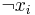
dem Knoten (i+n) zugeordnet werden. Zu jedem gegebenen Knoten i findet man dann den negierten Partnerknoten j leicht durch die Formel j = (i + n ) % (2*n).Die Aufgabe besteht jetzt darin, folgende Fragen zu beantworten:
- Ist der durch den Implikationengraphen gegebene Ausdruck erfüllbar?
- Finde eine geeignete Belegung der Variablen, wenn der Ausduck erfüllbar ist.
Die erste Frage beantwortet man leicht, indem man die stark zusammenhängenden Komponenten des Implikationengraphen bildet. Dann gilt folgender
- Satz
- Seien u und v zwei Literale, die sich in der selben stark zusammenhängenden Komponente befinden. Dann müssen u und v stets den selben Wert haben, damit der Ausdruck erfüllt sein kann.
Die Korrektheit des Satzes folgt aus der Definition der stark zusammenhängenden Komponenten: Da u und v in der selben Komponente liegen, gibt es im Implikationengraphen einen Weg  sowie einen Weg
sowie einen Weg  . Wegen der Transitivität der "wenn, dann" Relation kann man die Wege zu zwei Implikationen verkürzen, die gleichzeitig gelten müssen:
. Wegen der Transitivität der "wenn, dann" Relation kann man die Wege zu zwei Implikationen verkürzen, die gleichzeitig gelten müssen:
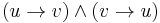
(die Verkürzung von Wegen zu direkten Kanten entspricht gerade der Bildung der transitiven Hülle für die Knoten u und v). In der obigen Wertetabelle für logische Operatoren erkennt mann, dass dies äquivalent zur Bedingung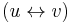
ist. Dies ist aber gerade die Behauptung des Satzes.Die Erfüllbarkeit des Ausdrucks ist nun ein einfacher Spezialfall dieses Satzes.
- Korrolar
- Der gegebene Ausdruck ist genau dann erfüllbar, wenn die Literale und sich für kein i in derselben stark zusammenhängenden Komponente befinden.
Setzt man nämlich im Satz
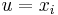
und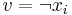
, und beide Knoten befinden sich in der selben Komponente, dann müsste gelten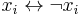
, was offensichtlich ein Widerspruch ist. Damit kann der Ausdruck nicht erfüllbar sein. Umgekehrt gilt, dass der Ausdruck immer erfüllbar ist, wenn und stets in verschiedenen Komponenten liegen, weil der folgende Algorithmus von Aspvall, Plass und Tarjan in diesem Fall stets eine gültige Belegung aller Variablen liefert:- Bestimme die stark zusammenhängenden Komponenten und bilde den Komponentengraphen. Ordne die Knoten des Komponentengraphen (also die stark zusammenhängenden Komponenten des Originalgraphen) in topologische Sortierung an.
- Betrachte die Komponenten in der topologischen Sortierung von hinten nach vorn und weise ihnen einen Wert nach folgenden Regeln zu (zur Erinnerung: alle Literale in der selben Komponente haben den selben Wert):
- Wenn die Komponente noch nicht betrachtet wurde, setze ihren Wert auf True, und den Wert der komplementären Komponente (derjenigen, die die negierten Literale enthält) auf False.
- Andernfalls, gehe zur nächsten Komponente weiter.
Der Algorithmus beruht auf der Symmetrie des Implikationengraphen: Weil Kanten immer paarweise
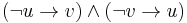
eingefügt werden, ist der Graph schiefsymmetrisch (skew symmetric): die eine Hälfte das Graphen ist die transponierte Spiegelung der anderen Hälfte. Enthält eine stark zusammenhängende Komponente die Knoten i1, i2, ..., so gibt es stets eine komplementäre Komponente
die Knoten i1, i2, ..., so gibt es stets eine komplementäre Komponente 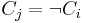
, die die komplementären Knoten j1 = (i1 + n) % (2*n), j2 = (i2 + n) % (2*n), ... enthält. Gilt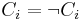
für irgendein i, so ist der Ausdruck nicht erfüllbar. Den Beweis für die Korrektheit des Algorithmus findet man im Originalartikel. Leider funktioniert dies nicht für k-SAT-Probleme mit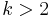
.Will man nur die Erfüllbarkeit prüfen, vereinfacht sich der Algorithmus zu:
- Bestimme die stark zusammenhängenden Komponenten.
- Teste für alle i = 0,...,n-1, dass Knoten i und Knoten (i+n) in unterschiedlichen Komponenten liegen.
Ist der Ausdruck erfüllbar, kann man eine gültige Belegung der Variablen jetzt mit dem randomisierten Algorithmus bestimmen, den wir im Kapitel Randomisierte Algorithmen behandeln.
Die Problemklassen P und NP
- für viele Probleme kein effizienter Algorithmus bekannt (effizient = polynomielle Komplexität
- O(
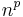
), für ein beliebig großes festes D; nicht effizient: langsamer als polynomiell, - z.b. O(
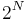
))
Bsp:
- Problem des Handlungsreisenden
- Steine Bäume verallg. MST: man darf zusätzliche Punkte hinzufügen
- Clique - Problem: Clique in Graph G: maximaler vollständiger Teilgraph, trivial: 2 Kinder (gibt es eine Clique mit k Mitgliedern?)
- Integer Linear Programming
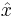
= arg max x [c,x Spaltenvektoren der Länge N]
- (s.t. A*x
b [A, Matrix MxN, b Spaltenvektor von M]
- x, {0, 1} nicht effizient
- x effizient)
Einleitung
- Komplexitätsklasse P: Effiziente Lösung bekannt (sortieren, MST, Dijkstra)
- Komplexitätsklasse NP: Existiert ein effizienter Algorithmus um einen geratenen Lösungsvorschlag zu überprüfen.
- geraten durch "Orakel" -> Black Box, nicht bekannt wie!
- offensichtlich gilt PNP (bekannter Lösungsalgorithmus kann immer als Orakel dienen). Offen ob:
- -PNP (es gibt Probleme ohne effizienten Alg)
- -oder P=NP (effizienter Algorithmus nur noch nicht entdeckt)
- Komplexitätsklasse NP-Vollständig (NP-C [complete]): Schwierigste Probleme in NP, wenn QNP-C kann man mit Algorithmus für Q indirekt auch jedes andere Problem in NP lösen
- RNP Q(R)NP-C (Reduktion)
- Lösung (R) Lösung Q(R)
- Reduktion muss effizient funktionieren, d.h. O()
- Komplexitätsklasse NP-Schwer (NP-hard): mindestens so schwer wie NP-C, aber nicht unbedingt NP
Vereinfachung: NP enthält nur Entscheigungsprobleme: Fragen mit Ja/Nein-Antwort.
- z.B.
- TSP-Optimierungsproblem (NP-Schwer):
- gegeben: gewichteter Graph
- gesucht: kürzeste Rundreise
- TSP-Entscheidungsproblem (NP-Vollständig):
- gegeben: gewichteter Graph
- Rundreise
- Orakel: "Rundreise Z ist
Klassische Definition von NP: Probleme die von einer nicht-deterministischen Turingmaschine gelöst werden können (N = Nicht deterministisch, P = Polynomiell).
- nicht deterministische Turingmaschine: formale Definition kompliziert Theoretische Informatik
- anschaulich: TM kann in kritischen Situationen das Orakel fragen und sich vorsagen lassen
moderne Definition: "polynomiell Verifizierbar": es gibt effizienten Algorithmus, der für Probleme X und Entscheidungsfrage Y und Kandidatenlösung Z entscheidet, ob Z eine "ja-Antwort" bei Y impliziert.
- Fall 1: korrekte Antwort auf Y ist "ja" (wissen wir aber nicht): z: V(X, Y, Z) OK
- Z ist Beweis (proof/witness/certificate) dafür, dass Y die Antwort "ja" hat
- liefert V(X, Y, Z) falsch, ist Z kein Beweis und wir wissen noch nicht, ib Y mit "ja" oder "nein" zu beantworten ist.
- Fall 2: korrekte Antwort auf Y ist "nein": Z V(X, Y, Z) falsch
- hat man einen Überprüfungsalgorithmus V, kann man X mit Y stets duch erschöpfende Suche ("brute-force") lösen
- für jede mögliche Kandidatenlösung Z:
- falls V(X, Y, Z) ok:
- return "ja"
- return "nein"
- falls V(X, Y, Z) ok:
-
ineffizient, da es meist exponentiell viele Kandidaten Z gibt.
Erfüllbarkeitsproblem
(SAT-satisfyability) ist das kanonische NP-Vollständige Problem (Satz von Cook 1971)
- boolsche Variable x1 {true, false}, i=1,...,N (Problemgröße N-Bits)
- logische Ausdrücke Y über X mit Operatoren , , , , ,
, ()
- z.B. N= 3, Y=(x1x2)(x1x2) Z=(true[x1], true[x2], true[x3])
- Entscheidungsfrage: Gibt es eine Belegung con X sodass Y wahr ist?
- Bei komplizierten Problemen ist kein besserer Algorithmus bekannt als alle Möglichkeiten zu probieren.
- Jede CPU kann als logische Schaltung geschrieben werden (damit auch jedes while-Programm)
- Bsp.: Zuordnung von Heim und Auswärtsspielen beim Fußball
- 1. Nebenbedingung: spielt Mannschaft i am Spieltag t gegen Mannschaft j, muss gelten
- 2. Nebenbedingung: Jede Mannschaft spielt gegen jede
- 3. Nebenbedingung: Jede Mannschaft spielt abwechselnd Heim und auswärts
- Alle Bedingungen sollen gleichzeitig Erfüllt sein:
- Frage: Kann man X so belegen, dass Y wahr ist?
- Nein, nur möglich wenn es nur 2 Mannschaften gibt und diese abwechselnd gegeneinander antreten.
Normalformen für logische Ausdrücke zur Vereinfachung und Systematisierung
- 3-CNF (Konjunktionen-NF)
- jede Klausel enthält max 3 Variablen (genau 3 mit dummy Variablen)
- jede Klausel enthält nur und
- alle Klauseln sind durch verknüpft.
z.B.
Ausdruck ist wahr, wenn jede Klausel wahr ist.
- In jeder Klausel hat man 3 Chancen die Klausel wahr zu machen.
- Aber: Klauseln können sich widersprechen und nicht erfüllbar sein!
Satz: Jeder logische Ausdruck effizient (in pol. Zeit) in 3-CNF umwandelbar.
Satz v. Cook: 3-SAT (Erfüllbarkeitsproblem für Ausdrücke in 3-CNF) ist NP-vollständig
zur Zeit ist kein effizienterer Algorithmus bekannt, als im schlechtesten Fall alle Belegungen von {} auszuprobieren
2-CNF: wie 3-CNF, nur 2 Variablen pro Klausel effiziente Alg existieren, aber nicht jeder logische Ausdruck in 2-CNF transformierbar.
- z.B. Heim-Auswärtsproblem
INF (Implikationen-NF):
- 2 Variablen pro Klausel, Operatoren
- Klauseln mit verknüpft.
Satz: jede 2-CNF effizient in INF umwandelbat.
INF als gerichteter Graph schreibbar und mittels starker Zusammenhangskomponenten lösbar.
| 0 | 0 | 0 | 1 | 0 | 0 | 0 |
| 0 | 1 | 1 | 1 | 1 | 1 | 1 |
| 1 | 0 | 1 | 0 | 1 | 1 | 1 |
| 1 | 1 | 1 | 1 | 1 | 1 | 1 |
3-SAT ist NP vollständig
Skizze des Beweises:
- Unsere Algorithmen können auf einer Turingmaschine ausgeführt werden (äquivalent zur Turingmaschine: λ-Kalkül, while-Programm usw.)
- Die Turingmaschine und ein gegebenes (festes) Programm können als logische Schaltung (Schaltnetz) implementiert werden, „Algorithmus in Hardware gegossen“
- Jedes Schaltnetzwerk kann als logische Formel geschrieben werden.
- 4. Jede logische Formel kann in 3-CNF umgewandelt werden
- => Jedes algorithmische Entscheidungsproblem kann als 3-SAT-Problem geschrieben werden.
k-SAT, k=2 in pol. Zeit lösbar
Alg. 1
(f. bei k) (nur für k=2 effizient) Randomisiert
- (0) initialisiere beliebig
- (1) wiederhole - mal
- (a) wenn das aktuelle x den Ausdruck erfüllt: return x (x=[, ... , ])
- (b) wähle zufällig eine Klausel, die nicht erfüllt ist
- (c) wähle in dieser Klausel zufällig eine der k Variablen und invertiere sie => Klausel ist jetzt erfüllt
- (andere können jetzt false geworden sein)
- ( auf 1 => 1. Klausel wahr, 2. falsch
- (2) return "keine Lösung gefunden"
Nach wie vielen Iterationen wird im Mittel eine Lösung gefunden?
- Ausdruck unerfüllbar => Endlosschleife, Timeout nach Iterationen
- Ausrduck erfüllbar:
- falls k
 3: nach Iterationen wird Lösung gefunden
3: nach Iterationen wird Lösung gefunden - k=3: exponentielle Zeit, wie zu erwarten für NP-vollständiges Problem
- k=2: Iterationen bis Lösung
- falls k
Beweis: Algorithmus entspricht im Wesentlichen dem Random Walk
- Sei die korrekte Lösung und x die aktuelle Belegung
- RW: Stuhl i i Variablen zwischen und x stimmen überein => Ziel: erreiche Stuhl N
- (c):
- Fall 1: beide Variablen falsch => egal welche wir invertieren, bewegen wir uns von Stuhl i zu i+1
- Fall 2: eine Variable ist falsch:
- mit Wahrscheinlichkeit 1/2 wählen wir diese und gehen von i nach i+1
- mit Wahrscheinlichkeit 1/2 wählen wir die andere und gehen von i nach i-1
schlechtester Fall: Es existiert keine Lösung und wir haben immer Fall 2
- =>RW braucht Schritte zum Stuhl N falls i anfangs zufällig ist
Alg. 2 (det. Alg. für k=2 mittels SZK in gerichtetem Graphen)
- geg.: Ausdruck 2-CNF
- (1) wandle nach INF: ersetze jede Klausel durch
- (entsprechend, wenn in Originalklausel vorkommen)
- (2) repräsentiere den Ausdruck als Graph:
- (a) 2 Knoten pro Var:
- (b) Verbindung für jede Implikation durch korrespondierenden Knoten durch gerichtete Kante
- (a) 2 Knoten pro Var:
Bsp.:
- (3) Prüfe ob der Ausdruck erfüllbar ist. Bilde SZK des Graphen
- Satz: Ausdruck erfüllbar i: und sind in verschiedenen Komponenten
Beweis: in jeder SZK gilt:
- Kanten
 Implikationen, Implikationen sind transitiv
Implikationen, Implikationen sind transitiv - bzw. u == v
-
alle Knoten in einer SZK haben den gleichen Wahrheitswert true oder false
- aber und und haben immer verschiedene Werte
- und dürfen nicht in selber SZK sein, andernfalls fordert der Graph , was unmöglich ist.
- (4) Bilde den Komponentengraphen azyklisch (zu jedem Knoten existiert Komplementärknoten mit negierter Variable)[jede SZK in je 1 Knoten kontrahieren]
- (b) bestehende topologische Sortierung
- (c) gehe in topologischer Sortierung von hinten nach vorne
- (I) wenn aktueller Knoten noch keinen Wert hat: setze ihn auf true und Komplementoren false
- (II) sonst: überspringe Knoten
Beweis, dass ein Problem aus NP auch NP-vollständig ist
- Möglichkeit 1: z.B. 3-SAT (Satz von Cook): mühsam, aber mindestens für ein Problem unbermeidbar (für erstes)
- Möglichkeit 2: zeige dass jedes Problem vom Typ A in eines von Typ B umwandelbar (in pol. Zeit)
-
- falls Typ A NP-vollständig
-
Anwendung auf TSP
3-SAT Hamiltonzyklus im gerichteten Graph
Hamiltonzyklus im ungerichteten Graph
TSP im gerwichteten ungerichteten Graph